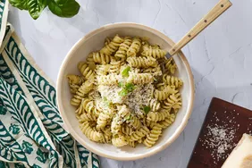

Pesto Pasta

Description
Pesto pasta is a delicious and flavorful dish that combines the vibrant taste of pesto sauce with the comforting
texture of pasta. Pesto is a traditional Italian sauce made from fresh basil leaves, garlic, pine nuts, Parmesan
cheese, and olive oil. The ingredients are blended together to create a rich and aromatic sauce that perfectly
complements the pasta.
Ingredients
- Pasta: Start with your favorite pasta shape.
- Onion and oil: Cook the onion in olive oil until it’s translucent.
- Pesto: Use your favorite store-bought or homemade pesto sauce.
- Seasonings: This pesto pasta is simply seasoned with salt and pepper.
- Cheese: Grate your own Parmesan cheese instead of using the pre-shredded stuff.
Steps
- Gather all ingredients.
- Fill a large pot with lightly salted water and bring to a rolling boil. Stir in pasta and return to a boil.
Cook pasta uncovered, stirring occasionally, until tender yet firm to the bite, 8 to 10 minutes. Drain;
transfer into a large bowl.
- Stir in pesto, salt, and black pepper until warmed through.
- Meanwhile, heat oil in a skillet over medium-low heat. Add onion; cook and stir until softened, about 3
minutes.
- Stir pesto mixture into hot pasta; stir in grated cheese to coat.
Home
More Pasta